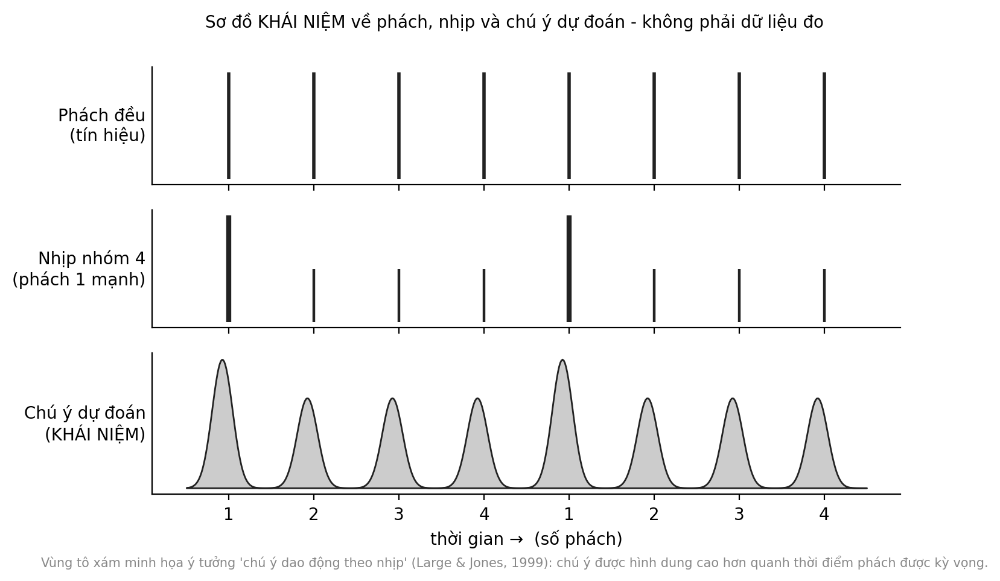

2 Nhịp điệu tổ chức thời gian
Sau giờ ra chơi, tiếng nói trong lớp dâng lên như sóng vỗ bờ. Cô giáo không hô to. Cô vỗ tay bốn tiếng đều, tiếng thứ nhất hơi mạnh hơn ba tiếng sau. Vài em vỗ đáp lại, rồi thêm vài em nữa, và tiếng ồn thưa dần theo nhịp vỗ. Điều gì trong cảnh quen thuộc ấy là một cơ chế có thể mô tả, và điều gì chỉ là mẹo của người có kinh nghiệm?
Câu hỏi trung tâm
Nhịp điệu giúp cơ thể và chú ý đồng bộ với thế giới như thế nào, và hiệu quả thấy ở phòng thí nghiệm chuyển được đến lớp học tới đâu? Chương này trả lời bằng hai nửa. Nửa đầu nói về một cơ chế đã được mô tả khá tốt. Nửa sau nói về khoảng cách giữa cơ chế ấy và một lớp học thật, nơi chúng ta hầu như chưa có thử nghiệm đối chứng.
Ba thuật ngữ nền
Phách (beat) là xung đều mà người nghe cảm nhận được trong âm nhạc, thứ ta gõ chân theo. Nhịp (meter) là cách các phách gom thành nhóm mạnh và nhẹ, chẳng hạn nhóm bốn với phách đầu nhấn hơn. Entrainment, tạm dịch là đồng bộ hóa nhịp, là hiện tượng hoạt động của cơ thể hoặc của não dần khớp với một nhịp bên ngoài. Cả chương xoay quanh ba khái niệm này.
Chương đi từ cơ chế đến thực hành theo sáu bước: dự đoán và phách, trẻ nhỏ, bệnh Parkinson như trường hợp ứng dụng lâm sàng rõ nhất, đồng bộ xã hội, khoảng cách giữa phòng thí nghiệm và lớp học, và khoảng lặng. Hai hoạt động ở cuối chương dùng nhịp chung cho một nhóm.
1. Phách, nhịp và dự đoán
Khi nghe một bản nhạc có nhịp rõ, hầu hết người nghe có thể gõ chân theo một xung đều mà không ai chỉ ra nó nằm ở đâu. Chúng ta cũng nghe các phách tự gom lại thành nhóm hai, ba hoặc bốn, với phách đầu nhấn mạnh hơn. Câu hỏi khoa học là não làm gì để một chuỗi âm thanh rời rạc trở thành một trục thời gian có thể dự đoán.
Cần phân biệt ba thứ dễ bị gộp lại. Phách là xung đều. Nhịp là cách các phách được nhóm. Còn tốc độ (tempo) là phách đến nhanh hay chậm. Một bài có thể đổi tốc độ mà vẫn giữ nguyên nhịp, và một chuỗi âm có thể có nhóm nhấn mạnh mà người nghe vẫn không cảm thấy phách nào. Chính vì khác nhau như vậy nên khi đọc một nghiên cứu, ta cần hỏi nó đo thứ nào trong ba thứ ấy.
Một lời giải thích nổi tiếng là lý thuyết chú ý động của Large và Jones. Theo đó, chú ý không phải một đèn pha bật liên tục mà dao động, và các dao động này có thể khớp pha với những sự kiện đều đặn, nên sự kiện rơi đúng thời điểm được kỳ vọng sẽ được xử lý thuận lợi hơn Giả thuyết (Large & Jones, 1999). Một khung liên quan mô tả phách và nhịp như kết quả của cộng hưởng thần kinh, trong đó các quần thể nơ-ron dao động theo tần số của nhịp bên ngoài Giả thuyết (Large & Snyder, 2009). Cả hai là mô hình lý thuyết: chúng đưa ra dự đoán kiểm chứng được, nhưng bản thân chúng chưa phải bằng chứng trực tiếp.
Một số quan sát phù hợp với bức tranh này. Trong một thí nghiệm ghi điện não, hoạt động của não tăng ở những tần số tương ứng với phách và, khi người nghe tưởng tượng nhóm phách theo hai hoặc ba, ở tần số của nhóm tưởng tượng ấy. Nói cách khác, não dường như thêm vào cấu trúc không có sẵn trong âm thanh Sơ bộ (Nozaradan và c.s., 2011).
Kết quả điện não này thuyết phục ở chỗ cấu trúc nhóm được “thêm vào” là điều người nghe tự tưởng tượng, không có trong âm thanh. Nó cũng có giới hạn: điện não đo hoạt động tổng hợp của rất nhiều nơ-ron ở bề mặt đầu, nên nó cho biết có một nhịp điệu trong hoạt động của não ở tần số ấy, nhưng không cho biết mạch nào tạo ra nó, và cũng không cho biết người nghe có “cảm nhận” nhịp như ta mô tả hay không. Một thí nghiệm chụp cộng hưởng từ chức năng cho thấy các vùng vận động, trong đó có hạch nền và vùng vận động phụ, hoạt động mạnh hơn khi nghe nhịp có phách đều so với nhịp không có phách rõ, ở cả người học nhạc và người không học nhạc Sơ bộ (Grahn & Brett, 2007). Hạch nền (basal ganglia) là cụm cấu trúc dưới vỏ não liên quan đến việc khởi phát và điều phối vận động. Điều đáng chú ý là các vùng liên quan đến vận động tham gia ngay cả khi người nghe ngồi yên, và ở mục 3 chúng ta sẽ thấy vì sao điều này quan trọng với bệnh Parkinson.
Các thí nghiệm gõ theo nhịp cho thấy một chi tiết nhỏ mà đáng nhớ: khi gõ theo nhịp đều, người ta thường gõ hơi sớm hơn tín hiệu một chút chứ không trễ Sơ bộ (Repp & Su, 2013). Điều này nhất quán với việc hệ vận động dự đoán thời điểm kế tiếp thay vì chờ tín hiệu rồi mới phản ứng. Từ đó chúng ta có thể giữ lại một mệnh đề thận trọng: nhịp điệu biến thời gian thành đơn vị có thể dự đoán và đồng bộ. Mệnh đề này giải mã thành ba điều kiểm chứng được. Chuỗi nhịp đều cho phép ước lượng thời điểm sự kiện kế tiếp. Cơ thể có thể chuẩn bị hoặc khớp theo ước lượng đó. Cả hai điều được đo trong các thí nghiệm gõ nhịp và ghi điện não. Mệnh đề không nói rằng nhịp điệu “tổ chức” mọi dạng chú ý hay học tập.
2. Entrainment ở trẻ nhỏ
Ở Chương 1, chúng ta đã gặp nghiên cứu cho thấy não trẻ sơ sinh phản ứng khi một phách mạnh bị bỏ khỏi chuỗi trống (Winkler và c.s., 2009). Kết quả ấy chỉ nói về phản ứng của não. Câu hỏi tiếp theo là cơ thể của trẻ tham gia vào việc nghe nhịp như thế nào.
Trong một thí nghiệm nổi tiếng, trẻ bảy tháng tuổi được bế nhún theo mỗi hai hoặc mỗi ba phách của một nhịp mơ hồ. Sau đó, khi nghe hai phiên bản của nhịp ấy với trọng âm khác nhau, trẻ có xu hướng chú ý lâu hơn đến phiên bản có trọng âm khớp với kiểu nhún mình đã trải qua. Những trẻ chỉ được nhìn người khác nhún thì không cho thấy khuynh hướng này Sơ bộ (Phillips-Silver & Trainor, 2005). Điều đó gợi ý rằng chuyển động của chính cơ thể, chứ không chỉ việc nghe, góp phần định hình cách trẻ nghe cấu trúc nhịp.
Một nghiên cứu quan sát trẻ từ vài tháng đến hai tuổi cho thấy các em vận động nhiều hơn khi nghe nhạc và nhịp đều so với lời nói, và một số trẻ điều chỉnh chuyển động theo phách ở mức cao hơn ngẫu nhiên Sơ bộ (Zentner & Eerola, 2010).
Hai nghiên cứu đều diễn ra trong phòng thí nghiệm, trong những phiên ngắn, với trẻ ở các bối cảnh nghiên cứu cụ thể. Chúng không cho biết một công thức nhún nhảy nào là tốt hơn, và không có lý do để biến cách bế ẵm quen thuộc của gia đình thành một bài tập đếm nhịp. Điều có thể nói là ở tuổi rất nhỏ, nghe nhịp và chuyển động đã gắn với nhau.
Một lưu ý an toàn: bế nhún chỉ nên nhẹ nhàng, và không bao giờ lắc mạnh trẻ nhỏ.
Cũng cần tránh hiểu entrainment thành một sự khớp hoàn hảo. Ở trẻ nhỏ, chuyển động theo nhạc thường lỏng lẻo, không đều và dễ bị cuốn sang việc khác; điều các nghiên cứu mô tả là một khuynh hướng thống kê của nhóm trẻ, không phải khả năng bám phách của từng em. Áp dụng các câu hỏi đánh giá của Chương 1: về thiết kế, đó là thí nghiệm đơn lẻ; về nhóm so sánh, nhóm chỉ nhìn người khác nhún là đối chứng hợp lý nhưng chưa loại hết khác biệt khác; về kết quả đo, đó là thời gian chú ý và mức vận động, không phải sự phát triển ngôn ngữ hay toán; về quần thể, đó là những nhóm trẻ ở các bối cảnh nghiên cứu cụ thể. Hiện chưa có dữ liệu đủ lớn ở Việt Nam về cách trẻ nhỏ trong các gia đình Việt vận động theo nhạc ở những lứa tuổi này; đây là hướng nghiên cứu ưu tiên.
3. Tín hiệu nhịp và dáng đi ở bệnh Parkinson
Nơi cơ chế đồng bộ nhịp được ứng dụng có hệ thống nhất là phục hồi chức năng thần kinh. Ở bệnh Parkinson, các tế bào sản xuất dopamine thoái hóa và mạch hạch nền bị ảnh hưởng; dáng đi thường chậm và bước ngắn. Kích thích thính giác theo nhịp (rhythmic auditory stimulation, RAS) cho người bệnh bước theo một nhịp đều, thường được chỉnh theo nhịp bước của chính họ. Cơ chế được đề xuất là sự đồng bộ hóa nhịp giữa tín hiệu thính giác và hệ vận động, trong đó nhịp bên ngoài có thể phần nào bù cho tín hiệu thời gian bên trong bị suy yếu Giả thuyết (Nombela và c.s., 2013; Thaut và c.s., 2015). Thử nghiệm sớm của Thaut và cộng sự về huấn luyện dáng đi bằng RAS là một trong những nghiên cứu mở đường cho hướng này Sơ bộ (Thaut và c.s., 1996).
Để đọc các con số bên dưới, cần biết ba chỉ số dáng đi. Chiều dài sải là quãng đường giữa hai lần chạm đất liên tiếp của cùng một bàn chân. Vận tốc đi là quãng đường đi được trong một đơn vị thời gian. Nhịp bước là số bước mỗi phút. Còn g là hiệu số chuẩn hóa giữa nhóm có tín hiệu và nhóm đối chứng, tính theo độ lệch chuẩn: g = 0,5 nghĩa là trung bình nhóm có tín hiệu cao hơn khoảng nửa độ lệch chuẩn. Nó cho biết kích thước tác động, nhưng không cho biết tác động ấy có ý nghĩa thực tiễn với từng người bệnh hay không.
Ba chỉ số này liên hệ với nhau theo một quan hệ đơn giản: vận tốc đi xấp xỉ bằng chiều dài sải nhân với nhịp bước. Vì vậy, nếu tín hiệu làm sải dài hơn trong khi nhịp bước không đổi hoặc giảm nhẹ, vận tốc vẫn có thể tăng. Khác biệt về hướng của nhịp bước giữa hai tổng quan không nhất thiết mâu thuẫn với nhau, nhưng nó cho thấy kết quả phụ thuộc vào cách tín hiệu được đặt tốc độ và chỉ số nào được chọn.
Hai phân tích gộp sau này đã tổng hợp nhiều nghiên cứu. Phân tích của Spaulding và cộng sự báo cáo, với tín hiệu thính giác, nhịp bước g = 0,56 (KTC 95% [0,29; 0,89]), chiều dài sải g = 0,50 (KTC 95% [0,29; 0,70]) và vận tốc đi g = 0,54 (KTC 95% [0,29; 0,80]) (Spaulding và c.s., 2013). Phân tích của Ghai và cộng sự, gộp 50 nghiên cứu với 1.892 người tham gia, ghi nhận chiều dài sải g = 0,48 và vận tốc đi g = 0,27, trong khi nhịp bước đi theo hướng ngược lại, g = −0,13 (Ghai, Ghai, Schmitz, và c.s., 2018). Chúng ta chưa lấy được khoảng tin cậy của phân tích thứ hai. Gộp lại, hai tổng quan gợi ý khá nhất quán rằng tín hiệu nhịp nghe được làm tăng chiều dài sải và vận tốc đi ở mức nhỏ đến trung bình theo quy ước thông thường Trung bình (Ghai, Ghai, Schmitz, và c.s., 2018; Spaulding và c.s., 2013).
Chúng ta chọn nhãn Trung bình chứ không phải Mạnh vì bốn lý do. Các nghiên cứu thành phần thường nhỏ. Kết quả đo ngay trong điều kiện có tín hiệu hoặc sau những đợt ngắn. Không thể làm mù người tham gia về việc họ đang nghe nhịp. Và hai tổng quan khác nhau về hướng tác động lên nhịp bước, điều nhắc rằng câu “nhịp giúp đi tốt hơn” quá gọn: tác động phụ thuộc vào chỉ số, loại tín hiệu và nhóm bệnh nhân. Chính Ghai và cộng sự còn lưu ý rằng phân tích trước đó của Spaulding được diễn giải mà không kiểm tra tính không đồng nhất giữa các nghiên cứu.
Ở người khỏe mạnh, một phân tích gộp 34 nghiên cứu với 854 người trẻ và cao tuổi ghi nhận vận tốc đi g = 0,85, chiều dài sải g = 0,61 và nhịp bước g = 1,1 khi đi theo tín hiệu nhịp Trung bình (Ghai, Ghai, & Effenberg, 2018). Đây là dáng đi của người lớn trong điều kiện được đo, không phải của trẻ em hay của lớp học.
Lưu ý quan trọng nhất của mục này: RAS trong bệnh Parkinson là can thiệp lâm sàng, do chuyên gia được đào tạo triển khai trong những điều kiện kiểm soát. Nó là bằng chứng rằng cơ chế đồng bộ nhịp có thật và dùng được, không phải bằng chứng rằng một giáo viên hay phụ huynh nên thực hiện điều tương tự.
4. Đồng bộ và hợp tác xã hội
Nhịp chung không chỉ phối hợp cơ thể với một tín hiệu mà còn phối hợp người với người. Trong thí nghiệm ở Chương 1, trẻ khoảng mười bốn tháng tuổi được bế nhún đồng bộ với một người lớn có xu hướng giúp người ấy nhiều hơn so với khi nhún lệch nhịp Sơ bộ (Cirelli và c.s., 2014). Ở trẻ bốn tuổi, những em cùng tham gia một hoạt động hát và vận động theo nhạc có xu hướng giúp bạn chơi cùng nhiều hơn so với những em chơi một trò chơi chung không có nhạc Sơ bộ (Kirschner & Tomasello, 2010).
Ở người lớn, các thí nghiệm cho thấy gõ theo cùng một nhịp làm tăng đánh giá về sự thân thiện, và đi hoặc hát cùng nhau làm tăng hợp tác trong các trò chơi kinh tế Sơ bộ (Hove & Risen, 2009; Wiltermuth & Heath, 2009). Một phân tích gộp về hậu quả ủng hộ xã hội của đồng bộ ghi nhận tác động tích cực, với độ lớn phụ thuộc vào thiết kế và nhóm đối chứng; chúng ta chưa đối chiếu lại số liệu cụ thể của phân tích này Trung bình (Rennung & Göritz, 2016).
Có một điểm phương pháp đáng lưu ý. Trong nhiều thí nghiệm kiểu này, nhóm đối chứng là nhóm làm hoạt động tương tự nhưng lệch nhịp, và sự khác biệt giữa hai nhóm chỉ đủ để nói rằng khớp thời gian có góp phần. Nó chưa đủ để nói âm nhạc làm điều đó, vì các tác giả thường cho cả hai nhóm cùng nghe hoặc cùng làm một việc. Trong chương này, vì vậy, “nhịp chung” là đối tượng được đo, còn “âm nhạc” chỉ là một cách thuận tiện để tạo ra nhịp chung.
Cuối cùng, mức thoải mái với hoạt động tập thể khác nhau giữa các em. Có em thích vỗ tay, hát cùng bạn; có em ngại bị chú ý hoặc nhạy cảm với tiếng ồn. Một hoạt động nhịp tốt cho phép em ấy giữ một vai trò nhẹ hơn, như người quan sát hoặc người đếm thầm, thay vì buộc em tham gia theo đúng cách mà hoạt động đòi hỏi Thực tiễn sư phạm.
Cần đọc các kết quả trên một cách có chừng mực. Đo lường thường diễn ra ngay sau hoạt động, trong tình huống thí nghiệm, bằng một hành vi cụ thể như nhặt giúp một món đồ hay chia điểm trong trò chơi. Chưa rõ tác động đến từ chính sự khớp thời gian, hay từ việc cùng chú ý và cùng làm một việc. Và không có kết quả nào cho thấy việc buộc cả nhóm làm giống nhau là tốt. Điều các nghiên cứu hỗ trợ là một nhận định hẹp hơn: những hoạt động chung có nhịp có thể là một cách thuận lợi để trẻ làm việc cùng nhau trong những khoảnh khắc ngắn. Ngay cả nhận định này cần được hiểu là xu hướng của nhóm: sẽ có những trẻ không phản ứng theo hướng ấy, và các nghiên cứu hiếm khi báo cáo kỹ về các em đó.
5. Từ phòng thí nghiệm đến lớp học: khoảng cách chính là phát hiện
Hãy xếp các bằng chứng ở trên theo mức độ gần với lớp học. Gần nhất là các thí nghiệm xã hội với trẻ nhỏ, nhưng đó là những phiên ngắn, giữa một người lớn với một trẻ hoặc một nhóm nhỏ, và kết quả đo bằng một hành vi giúp đỡ. Xa hơn là các nghiên cứu dáng đi ở người bệnh Parkinson: người lớn, một chỉ số vận động, do người được đào tạo triển khai. Xa nhất là dữ liệu điện não và hình ảnh não, vốn mô tả cơ chế chứ không đo hiệu quả của việc dạy.
| Tiêu chí | Điều thường thấy ở phòng thí nghiệm | Điều thường gặp ở lớp học |
|---|---|---|
| Số người | một người hoặc nhóm nhỏ | cả lớp, nhiều nhu cầu khác nhau |
| Môi trường | yên tĩnh, kiểm soát | ồn, bị ngắt quãng |
| Liều | một phiên ngắn | lặp lại hằng ngày, có thể thành thói quen |
| Kết quả đo | một hành vi hoặc chỉ số cụ thể | chuyển hoạt động, chú ý, bầu không khí lớp |
| Người thực hiện | nhà nghiên cứu được đào tạo | giáo viên đa nhiệm |
Bảng này không nói rằng lớp học kém hơn phòng thí nghiệm. Nó nói rằng các điều kiện khác nhau, và một số khác biệt, như liều lặp lại và mối quan hệ lâu dài giữa giáo viên với học sinh, có thể làm hiệu quả thật lớn hơn hoặc nhỏ hơn mức đo được ở phòng thí nghiệm. Chúng ta chưa biết theo hướng nào.
Một ví dụ về cách đọc một tuyên bố thường gặp: “nhịp điệu giúp trẻ tập trung”. Hãy tách nó thành chuỗi suy luận. Bước một, nhịp đều giúp não dự đoán thời điểm sự kiện kế tiếp; bước này có bằng chứng cơ chế ở người lớn và trẻ nhỏ. Bước hai, dự đoán tốt hơn làm tăng chú ý của trẻ khi học một nội dung; chúng ta chưa có bằng chứng đối chứng cho bước này trong lớp học. Bước ba, trẻ tập trung lâu hơn thì học tốt hơn; đây là một giả định nằm ngoài âm nhạc. Một tuyên bố chỉ vững bằng mắt xích yếu nhất của nó.
Một lớp học đông khác phòng thí nghiệm ở hầu hết các điểm quan trọng: nhiều trẻ cùng lúc, tiếng ồn nền, mức chú ý và nhu cầu giác quan khác nhau, và một mục tiêu không phải là đo mà là chuyển sang hoạt động kế tiếp. Còn có một lý do nữa để thận trọng với việc suy từ lập luận cơ chế sang lớp học. Ở thanh thiếu niên, khả năng gõ theo phách đều có liên hệ với một số chỉ số về đọc, chú ý và xử lý âm thanh lời nói; đây là tương quan, và nó không cho biết việc luyện gõ nhịp có cải thiện đọc hay không Sơ bộ (Tierney & Kraus, 2013). Chương 6 sẽ quay lại câu hỏi này.
Theo các nguồn chúng ta đã xem, chưa có thử nghiệm đối chứng nào về việc dùng tín hiệu nhịp để chuyển hoạt động trong lớp học. Hiện chưa có dữ liệu đủ lớn ở Việt Nam về điều này; đây là hướng nghiên cứu ưu tiên.
Dù vậy, giáo viên vẫn dùng nhịp để làm việc hằng ngày, và có thể làm vậy một cách có suy nghĩ. Giáo viên có thể dùng nguyên lý nhịp điệu để điều phối chú ý và chuyển tiếp. Đây là một thực hành sư phạm được nhiều giáo viên áp dụng, chưa có nghiên cứu đối chứng làm cơ sở riêng Thực tiễn sư phạm. Giải mã: một tín hiệu đều và lặp lại thì dự đoán được; trẻ có thể vỗ theo mà không cần giải thích; và một chuyển tiếp ngắn, vài giây, không đòi hỏi giáo viên nâng giọng. Điều mệnh đề không nói là tín hiệu nhịp bảo đảm một lớp yên lặng, thay được quan hệ và quy ước lớp, hay phù hợp với mọi trẻ. Trẻ nhạy cảm với tiếng động cần một tín hiệu thay thế, chẳng hạn một cử chỉ nhìn thấy được.
6. Khoảng lặng trong nhịp
Khoảng lặng cũng là một phần của trải nghiệm âm nhạc và giao tiếp. Về âm nhạc, một thí nghiệm của Margulis cho thấy quãng ngừng được nghe như một phần của cấu trúc nhạc, và trải nghiệm về nó thay đổi theo bối cảnh âm nhạc xung quanh Sơ bộ (Margulis, 2007). Về giao tiếp, một nghiên cứu so sánh nhiều ngôn ngữ cho thấy khoảng trống giữa hai lượt nói trong hội thoại thường rất ngắn, cỡ vài trăm mili-giây hoặc ít hơn, dù độ dài có khác nhau giữa các ngôn ngữ Sơ bộ (Stivers và c.s., 2009). Chúng ta chưa xác nhận được tiếng Việt có nằm trong mẫu của nghiên cứu này hay không.
Hai quan sát ấy giải mã mệnh đề thành một ý hẹp: thời gian im lặng không phải chỗ trống mà người nghe và người nói đều tính đến. Mệnh đề không nói rằng im lặng luôn tốt hơn tiếng động, hay rằng mọi khoảng lặng đều mang cùng một ý nghĩa.
Với giáo viên, điều này gợi ý một thói quen đơn giản: sau một câu hỏi hay một mô-típ nhịp, dừng lại một vài nhịp thở trước khi nói tiếp để học sinh có thời gian chuẩn bị đáp lại Thực tiễn sư phạm. Cũng cần nhớ rằng khoảng chờ thoải mái khác nhau giữa các cá nhân và các cộng đồng, nên hãy quan sát lớp của mình thay vì áp một con số.
Khoảng lặng cũng có thể là một phần của chính hoạt động nhịp. Khi một nhóm đang chuyền bóng hoặc vỗ tay theo nhịp rồi dừng lại cùng lúc, tất cả đều “nghe” cùng một chỗ trống và cùng chuẩn bị cho điểm bắt đầu kế tiếp. Điều này không có thí nghiệm riêng làm cơ sở; nó là một cách diễn đạt sư phạm cho điều mục 1 mô tả ở cấp độ não: chờ đợi cũng là một phần của dự đoán Thực tiễn sư phạm.
Cơ chế và bằng chứng chính
| Phát biểu | Mức | Nguồn chính | Điều kiện / giới hạn |
|---|---|---|---|
| Não và hệ vận động dự đoán và khớp với nhịp đều | Sơ bộ | (Grahn & Brett, 2007; Nozaradan và c.s., 2011; Repp & Su, 2013) | nghiên cứu cơ chế, người lớn; mô hình lý thuyết đi kèm là giả thuyết |
| Chuyển động của trẻ ảnh hưởng cách nghe nhịp | Sơ bộ | (Phillips-Silver & Trainor, 2005; Zentner & Eerola, 2010) | phiên ngắn, phòng thí nghiệm |
| Tín hiệu nhịp tăng chiều dài sải và vận tốc ở bệnh Parkinson | Trung bình | (Ghai, Ghai, Schmitz, và c.s., 2018; Spaulding và c.s., 2013) | can thiệp lâm sàng; tác động lên nhịp bước không nhất quán; không áp dụng cho lớp học |
| Đồng bộ làm tăng hành vi giúp đỡ ở trẻ và hợp tác ở người lớn | Sơ bộ | (Cirelli và c.s., 2014; Kirschner & Tomasello, 2010; Rennung & Göritz, 2016) | đo ngay sau hoạt động; chưa rõ cơ chế riêng của thời gian |
| Dùng tín hiệu nhịp để chuyển hoạt động trong lớp | Thực tiễn sư phạm | không có thử nghiệm | được áp dụng rộng; chưa có dữ liệu đối chứng |

Ứng dụng trong lớp học và gia đình Việt Nam
Hai hoạt động dưới đây dùng một nhịp chung để phối hợp một nhóm, không cần dụng cụ. Cả hai là thực hành sư phạm; cơ chế ở các mục trên chỉ cho thấy vì sao chúng có thể hợp lý, và không cho biết chúng có hiệu quả với lớp của bạn hay không.
Mục tiêu: Cả nhóm cảm nhận một phách chung và chú ý đến phách mạnh bằng cách chuyền một vật theo nhịp đếm.
Chuẩn bị: Một quả bóng mềm, hoặc một cuộn khăn hay tất cuộn tròn. Một vòng tròn từ sáu đến mười người ngồi hoặc đứng. Một người đếm to, có thể là giáo viên hoặc một học sinh.
Thời gian: 10 phút.
Các bước:
- Người đếm đếm đều “một, hai, ba, bốn”, nhấn nhẹ vào chữ “một”. Cả nhóm vỗ nhẹ lên đùi theo tiếng đếm trong hai vòng.
- Người đầu tiên cầm bóng. Mỗi lần nghe “một”, bóng được chuyền sang người bên cạnh; ba tiếng còn lại là để chuẩn bị.
- Chuyền hết một vòng. Nếu bóng rơi trượt nhịp, cả nhóm bắt đầu lại, không ai bị chỉ trích.
- Cho một học sinh khác làm người đếm và tăng hoặc giảm tốc độ rất nhẹ.
- Kết thúc bằng một vòng có bốn nhịp im lặng ở cuối câu: người đếm chỉ đếm thầm, cả nhóm vẫn chuyền bóng vào đúng chữ “một” kế tiếp.
Quan sát gì: Ai bắt được phách, ai cần thêm vài vòng, lúc nào nhóm chùng nhịp. Ghi nhận như thông tin cho lần sau, không chấm điểm.
Biến thể: Mầm non: nhóm bốn đến sáu trẻ, chuyền theo nhịp một bài hát quen. Tiểu học: thêm nhịp ba (một, hai, ba) và đổi chiều chuyền. THCS: chia hai vòng với hai tốc độ, rồi hỏi các em điều gì giúp mình giữ nhịp. Gia đình: hai hoặc ba người, một người đếm.
Lưu ý: Dùng vật mềm và khoảng trống an toàn. Không loại ai ra khỏi vòng; em chậm hơn có thể làm người đếm. Với trẻ nhạy cảm với âm thanh, đếm nhỏ hoặc thay tiếng đếm bằng cử chỉ tay nhìn thấy được.
Mức bằng chứng của hoạt động: Thực tiễn sư phạm. Các nghiên cứu ở mục 1 và 2 là nền tảng cơ chế trong phòng thí nghiệm, chưa kiểm chứng riêng cho hoạt động này.
Mục tiêu: Lấy lại chú ý của cả lớp trong vài giây bằng một tín hiệu nhịp quen thuộc, thay vì nâng giọng.
Chuẩn bị: Không cần gì. Chọn một mô-típ cố định, chẳng hạn bốn tiếng vỗ tay đều với tiếng đầu hơi mạnh.
Thời gian: 5 phút để tập, sau đó dùng được trong vài giây mỗi lần.
Các bước:
- Báo trước lúc lớp đang yên: “Khi cô vỗ bốn tiếng như thế này, các em vỗ lại bốn tiếng rồi dừng và nhìn cô.”
- Tập hai đến ba lần để cả lớp biết mô-típ.
- Khi cần chuyển hoạt động, vỗ đúng mô-típ ấy và chờ.
- Khi lớp đã đáp lại, dừng một đến hai nhịp thở rồi mới nói câu hướng dẫn tiếp theo.
- Giữ nguyên mô-típ trong cả học kỳ để nó trở thành tín hiệu quen thuộc.
Quan sát gì: Mất bao lâu để lớp đáp lại, em nào cần nhắc riêng, lúc nào tín hiệu không còn tác dụng.
Biến thể: Mầm non: kèm một cử chỉ tay, hoặc hát một câu ngắn thay vì vỗ. Tiểu học: để học sinh luân phiên tạo mô-típ mới. THCS: dùng một tín hiệu nhìn thấy được, chẳng hạn giơ tay, nếu các em thấy vỗ tay trẻ con. Gia đình: dùng ở giờ dọn đồ chơi.
Lưu ý: Không dùng tín hiệu để phạt. Với trẻ nhạy cảm với tiếng động hoặc trẻ khiếm thính, chuyển sang tín hiệu nhìn thấy được hoặc rung nhẹ. Nếu lớp không đáp lại, đừng vỗ lớn hơn; hãy đến gần và nói nhỏ.
Mức bằng chứng của hoạt động: Thực tiễn sư phạm; chưa có thử nghiệm đối chứng về việc này trong lớp học.
Giới hạn và lưu ý đạo đức
Phần lớn bằng chứng về cơ chế ở chương này đến từ người lớn hoặc từ trẻ trong những phiên ngắn ở phòng thí nghiệm, và các mô hình lý thuyết về chú ý dao động vẫn là giả thuyết. Bằng chứng mạnh nhất, về dáng đi trong bệnh Parkinson, lại là bằng chứng lâm sàng cho một nhóm bệnh nhân, do chuyên gia triển khai; việc dùng nhịp ở lớp học hay ở nhà không phải là trị liệu và không nên được mô tả như vậy. Nếu một người thân có bệnh Parkinson hoặc khó khăn vận động, hãy hỏi bác sĩ hoặc nhà vật lý trị liệu thay vì tự thực hiện các bài tập nhịp.
Một lý do nữa để thận trọng là hiệu ứng mới lạ: một tín hiệu mới thường thu hút chú ý trong vài ngày đầu chỉ vì nó mới, và điều đó dễ bị nhầm với tác dụng của nhịp. Chỉ khi tín hiệu đã trở thành thói quen mà lớp vẫn đáp lại, ta mới có lý do mạnh hơn để nghĩ rằng nhịp góp phần. Cần tính đến chi phí cơ hội và khả năng tiếp cận. Vài phút dành cho hoạt động nhịp là vài phút không dành cho việc khác, và một lớp đông, hẹp hoặc ồn có thể khiến hoạt động khó thực hiện an toàn. Trẻ khiếm thính, trẻ nhạy cảm giác quan hoặc trẻ gặp khó khăn về vận động cần những cách tham gia khác, chẳng hạn nhìn tín hiệu, cảm nhận rung, hoặc giữ vai trò người đếm. Âm lượng cần được giữ thấp. Cuối cùng, dữ liệu Việt Nam về các chủ đề của chương này gần như vắng mặt, từ cách trẻ nhỏ vận động theo nhạc đến hiệu quả của tín hiệu nhịp trong lớp; chúng ta không nên suy ra rằng kết quả ở nơi khác áp dụng nguyên văn.
Một hướng nghiên cứu khả thi và ít tốn kém ở Việt Nam là quan sát nhỏ, có sự đồng ý của nhà trường và gia đình. Một giáo viên có thể luân phiên hai kiểu chuyển hoạt động, một bằng tín hiệu nhịp quen thuộc và một bằng cách hô như thường lệ, trong nhiều ngày, rồi ghi thời gian lớp ổn định sau tín hiệu và cảm nhận của chính giáo viên và học sinh. Thiết kế như vậy chưa thể chứng tỏ nguyên nhân, nhưng đủ để tạo ra dữ liệu đầu tiên và các câu hỏi tốt hơn cho nghiên cứu lớn hơn.
Tóm tắt chương
- Nhịp đều giúp não và cơ thể dự đoán và khớp với thời gian; bằng chứng cơ chế còn ở mức bước đầu và các mô hình đi kèm là giả thuyết Sơ bộ (Grahn & Brett, 2007; Nozaradan và c.s., 2011).
- Ở trẻ nhỏ, chuyển động của cơ thể gắn với cách nghe nhịp, trong những thí nghiệm ngắn Sơ bộ (Phillips-Silver & Trainor, 2005; Zentner & Eerola, 2010).
- Tín hiệu nhịp nghe được cải thiện chiều dài sải và vận tốc đi ở người bệnh Parkinson ở mức nhỏ đến trung bình, trong bối cảnh lâm sàng Trung bình (Ghai, Ghai, Schmitz, và c.s., 2018; Spaulding và c.s., 2013).
- Nhịp chung có thể thuận lợi cho hành vi giúp đỡ và hợp tác trong những khoảnh khắc ngắn, nhưng cơ chế và độ bền của hiệu ứng chưa rõ Sơ bộ (Cirelli và c.s., 2014; Kirschner & Tomasello, 2010).
- Dùng nhịp và khoảng lặng để chuyển hoạt động trong lớp là thực hành có lý nhưng chưa có thử nghiệm đối chứng Thực tiễn sư phạm.
Câu hỏi phản tư
Trong lớp hoặc gia đình của bạn, có tín hiệu nhịp nào đang được dùng mà chưa ai gọi tên, và nó giúp ai cũng như làm khó ai? Điều bạn quan sát được nằm ở đâu trên thang bằng chứng của chương này?